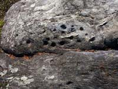
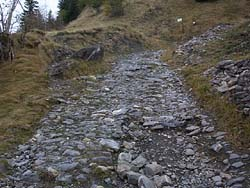
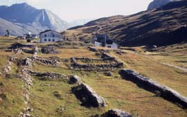

Préhistoire et Romanité
Ruines préhistoriques.

Photo : la pierre à cupules des Echines.
Ruines romaines.
Photos : la route romaine près de Saint Germain.
ruines des mansiones (lieux d'étape) au col du Petit Saint Bernard, cliché Henry Barthélémy.

